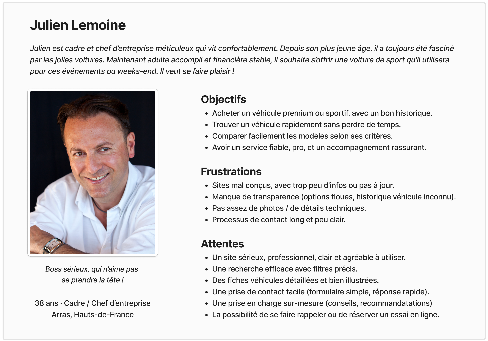
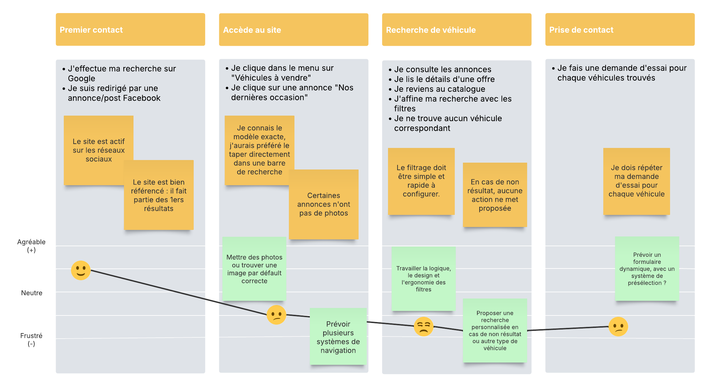

Julien Lemoine
Julien est cadre et chef d’entreprise méticuleux qui vit confortablement. Depuis son plus jeune âge, il a toujours été fasciné par les jolies voitures. Maintenant adulte accompli et financière stable, il souhaite s’offrir une voiture de sport qu'il utilisera pour ces événements ou weeks-end. Il veut se faire plaisir !

